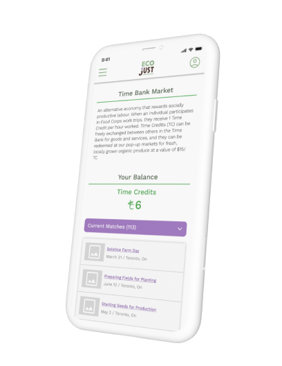
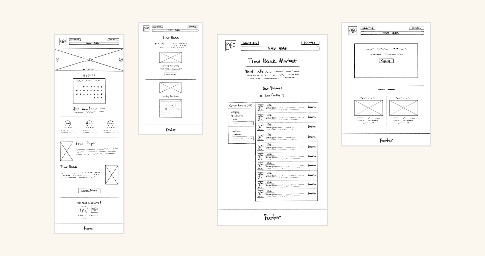
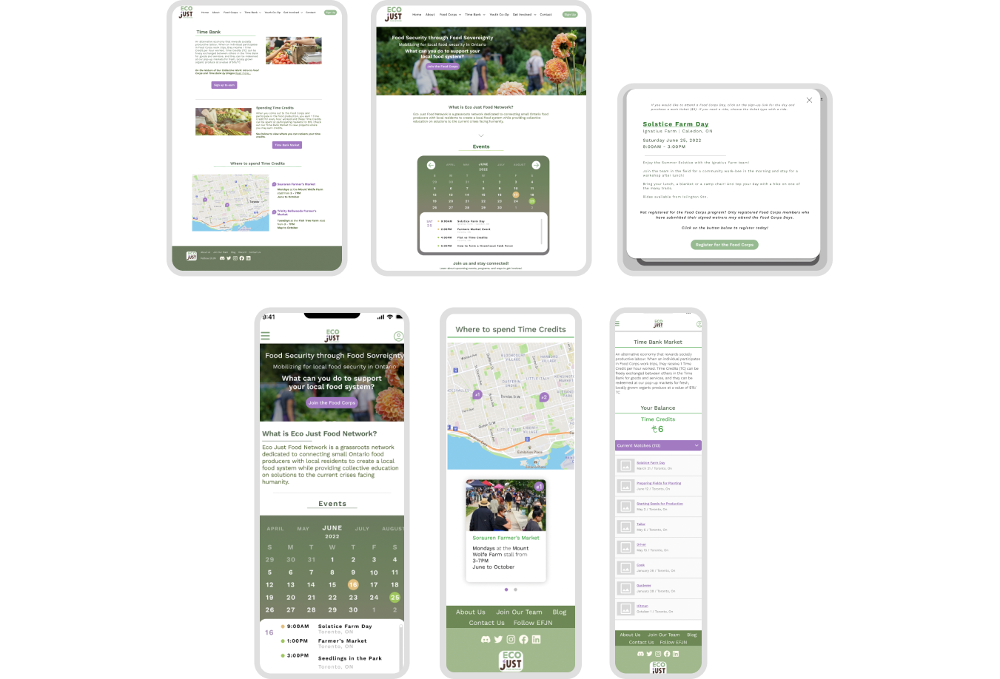

Anna Melendres, Ege Pulat, & Gapilan Nicholas
June 2022 - 3 Weeks
UX/UI Designer, Researcher, and Tester
The Problem
The homepage is imperative in order to attract more users to sign up for activities available at Eco-Just Food Network.
At first glance, the EFJN site holds a lot of information and events that has the potential to be organized in a new compelling ways. Our stakeholders suggested an events calendar to help members keep track of these activities and allow new joiners to register. Lastly, the EFJN unique “Time Bank” feature needed to be more engaging in order to get more people interacting with the farm and market days.
What is the Time Bank?
EFJN gives back to their participants by rewarding them with Time Credits (TC) every time they volunteer on the farm to assist the food corps. Participants may redeem these time credits at particpating farmer’s market stalls and grab fresh food harvested from the farm. This allows people and youth to learn about the process of food sovreignety, they also get to be rewarded for assisting their community.
The Goals
The main goal of the redesign was to make it easier for user’s to learn and engage more with the Eco Just Food Network.
A user’s experience with the Eco-Just Food Network site is very information-dense but we wanted to create visually appealing designs that offer more balance between information and engagement. Our plan was to improve the ways we inform our user with what EFJN has to offer and organize that information with
Our plan was to improve the ways we inform our user with what EFJN has to offer. Designing a new events calender which will bring more registrants to Eco-Just.
The Research
Overview
At first glance, the EFJN site holds a lot of information and events that has the potential to be organized in a new compelling ways. Our stakeholders suggested an events calendar to help members keep track of these activities and allow new joiners to register. Lastly, the EFJN unique “Time Bank” feature needed to be more engaging in order to get more people interacting with the farm and market days.
We conducted 5 user interviews
Our participants for the interviews consisted of people who work within the Eco Just Food Network and people who are not but could possibly want to join.
Here is what we found:
"The homepage is overwhelming and not intriguing."
"The time bank needs more information."
"Overall functionality of the site is confusing."

The Design Process
We began with sketching our layout for the website redesign, focusing on the key features we wanted to build on such as an events calendar on the homepage, Time Bank and Time Bank Market.
Low Fidelty Wireframes
Mid Fi Wireframes
Throughout the process of reiterations and conducting 5 usability tests
Here were our 3 key findings:
Text was too small for users to read.
Page layout was too narrow and had too much white space.
Colours needed to be accessible.
RWD Design Compositions
Implementing the EFJN events calendar on the homepage as mentioned above, we added a pop-up to request for users to 'Register for the food corps'.
